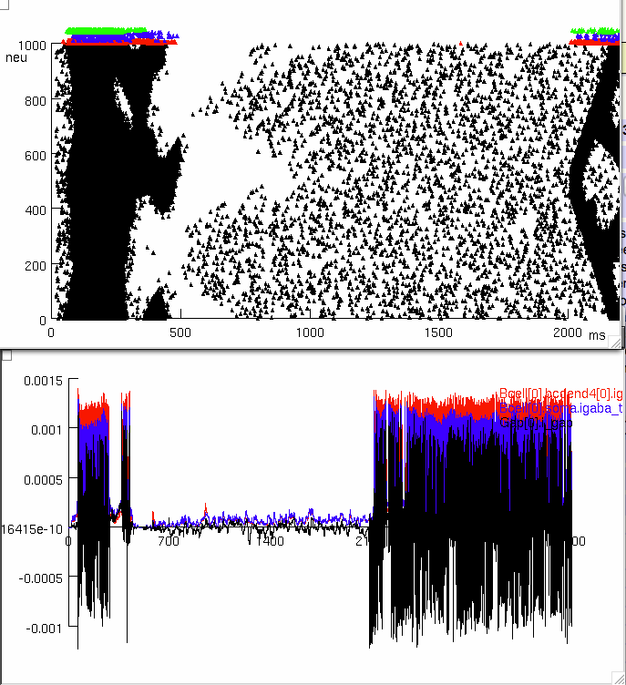

This is the readme for the model associated with the paper:
Yu J, Proddutur A, Elgammal FS, Ito T, Santhakumar V (2013) Status
epilepticus enhances tonic GABA currents and depolarizes GABA reversal
potential in dentate fast-spiking basket cells. J Neurophysiol
109:1746-63
These NEURON files were uploaded to ModelDB by Dr A Proddutur. NEURON
is freely available at http://www.neuron.yale.edu
These hoc files can replicate figure 11. A3 and B3. In order to
replicate spike rasters from figure 11. Tonic conductance in basket
cell template and TC value need to be changed according to methods
presented in paper.
Usage:
Compile the mod files (nrnivmodl in linux/unix, mknrndll mac/mswin).
Run the model by starting one of the hoc files, e.g. in linux
nrngui fixed\ rseed\ Control\ -74\ spill_\ tonic\ 10uS\ with\ mossy\ kill.hoc
For this one, click the "Custom initialization" and then the "Custom
run" buttons. After about a half hour (on a 2013 MacBook Pro laptop)
the following figures were generated:

Changelog:
2022-05: Updated MOD files to contain valid C++ and be compatible with the
upcoming versions 8.2 and 9.0 of NEURON.
2022-09: Update MOD files to avoid declaring variables and functions with the same name.
See https://github.com/neuronsimulator/nrn/pull/1992